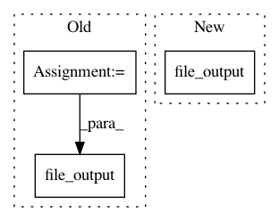

f3b32d6d41d65701aa65bae951518e1ec387b483,ffmpeg/tests/test_ffmpeg.py,,_get_complex_filter_example,#,78
Before Change
def _get_complex_filter_example():
in_file = ffmpeg.file_input(TEST_INPUT_FILE)
concatted = ffmpeg.concat(
ffmpeg.trim(in_file, 10, 20),
ffmpeg.trim(in_file, 30, 40),
ffmpeg.trim(in_file, 50, 60),
)
out = ffmpeg.file_output(concatted, TEST_OUTPUT_FILE)
return ffmpeg.overwrite_output(out)
def test_get_args_complex_filter():
After Change
def _get_complex_filter_example():
in_file = ffmpeg.file_input(TEST_INPUT_FILE)
overlay_file = ffmpeg.file_input(TEST_OVERLAY_FILE)
return ffmpeg \
.concat(
in_file.trim(10, 20),
in_file.trim(30, 40),
In pattern: SUPERPATTERN
Frequency: 3
Non-data size: 3
Instances
Project Name: kkroening/ffmpeg-python
Commit Name: f3b32d6d41d65701aa65bae951518e1ec387b483
Time: 2017-05-14
Author: karlk@kralnet.us
File Name: ffmpeg/tests/test_ffmpeg.py
Class Name:
Method Name: _get_complex_filter_example
Project Name: automl/auto-sklearn
Commit Name: 85cc5f10bbc3f06db3198e0b31c4d36f2d2d84c2
Time: 2016-02-10
Author: feurerm@informatik.uni-freiburg.de
File Name: autosklearn/evaluation/holdout_evaluator.py
Class Name: HoldoutEvaluator
Method Name: iterative_fit
Project Name: automl/auto-sklearn
Commit Name: 85cc5f10bbc3f06db3198e0b31c4d36f2d2d84c2
Time: 2016-02-10
Author: feurerm@informatik.uni-freiburg.de
File Name: test/test_evaluation/test_holdout_evaluator.py
Class Name: HoldoutEvaluatorTest
Method Name: test_file_output